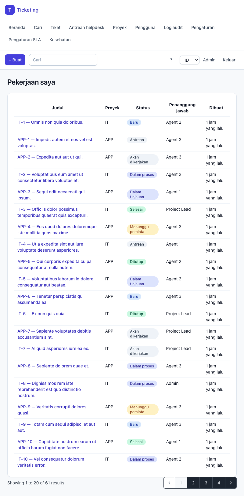
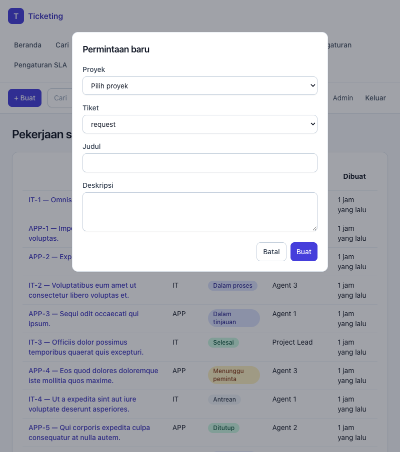
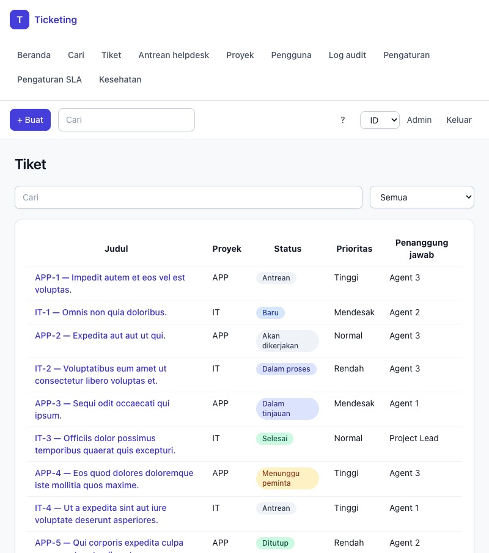

Panduan visual untuk memakai Ticketing System — helpdesk internal, pelacak pekerjaan dev, dan manajemen proyek dalam satu aplikasi. Cukup ikuti alur di bawah ini.
Dari login sampai tiket selesai. Peminta dan tim internal melihat aplikasi yang sama, dengan tampilan yang disesuaikan per peran.
Email + kata sandi, Google, atau tautan undangan. Admin wajib memakai 2FA.
Tombol + Buat atau tekan C. Pilih proyek, jenis, judul, dan deskripsi.
Agen mengambil tiket dari antrean, membalas, dan mengubah statusnya.
Peminta mendapat notifikasi, bisa membalas, atau membuka ulang hingga 7 hari.

Menu di samping kiri otomatis menyesuaikan. Anda tidak perlu mengingat URL — cukup pilih peran Anda di bawah.
Lima hal yang paling sering dilakukan, lengkap dengan tampilan aslinya.
Gunakan akun yang sudah terdaftar di perusahaan Anda. Ada tiga cara masuk:
Cara tercepat: klik + Buat di kanan atas, atau tekan C dari keyboard mana pun.

Semua tiket berkumpul di halaman Tiket (agen/lead) atau Permintaan saya (peminta).

Antrean helpdesk menampilkan permintaan belum ditugaskan, diurutkan berdasarkan prioritas lalu yang terlama.
Halaman Proyek merangkum anggota, kategori, balasan siap pakai, dan tiket. Lead juga mendapat alat perencanaan.
Warna dan ikon badge membantu Anda langsung tahu apa yang harus dilakukan tanpa membuka tiketnya.
Tekan tombol ini kapan saja saat berada di dalam aplikasi. Bantuan lengkap juga tersedia lewat tombol ? di kanan atas.
Pengaturan ini bisa diubah kapan saja dan tersimpan pada akun Anda, sehingga tetap berlaku saat Anda masuk dari perangkat lain.
Klik tombol matahari/bulan di kanan atas header untuk berganti tema. Tombol ini juga tersedia di halaman masuk, sebelum Anda login.
Gunakan pilihan ID / EN di kanan atas untuk berganti bahasa antarmuka. Preferensi tersimpan untuk akun Anda.
Buka menu Panduan penggunaan di sidebar (atau alamat /panduan) untuk membaca halaman ini tanpa keluar dari aplikasi.
Berlatar kuning dan hanya terlihat tim. Tidak pernah dikirim lewat email ke peminta.
Tempel, seret, atau klik tombol lampiran di editor teks. Gambar tampil langsung di dalam deskripsi atau balasan; berkas lain menjadi tautan yang aman.
Sidebar otomatis menyesuaikan izin akun Anda — menu yang tidak berhak diakses akan tersembunyi.
Perubahan status dan balasan muncul langsung tanpa perlu menyegarkan halaman.
Tiket selesai bisa dibuka lagi dalam 7 hari jika masalah belum benar-benar teratasi.
Integrasi Trello dua arah dan webhook Git dapat mengirim atau menutup tiket otomatis.
Buka aplikasi, tekan C, pilih proyek, dan ceritakan kebutuhan Anda. Tim akan segera mengambil alih dari antrean.
Buka Ticketing System →